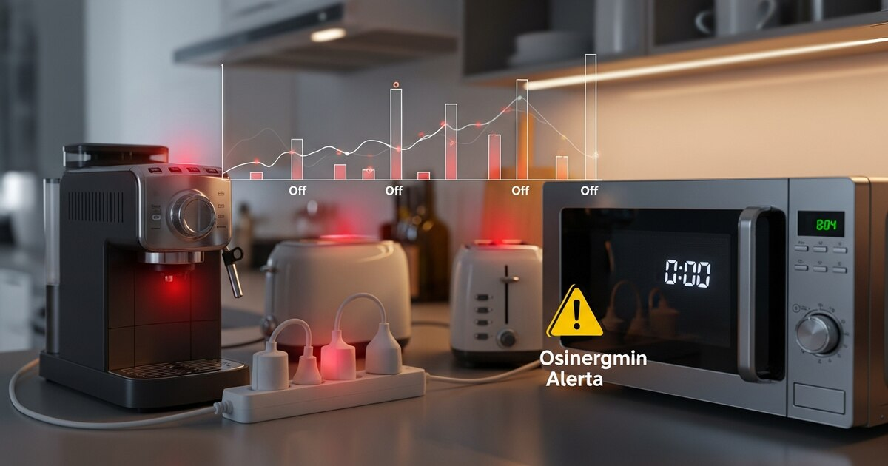

El Organismo Supervisor de la Inversión en Energía y Minería (Osinergmin) ha lanzado una alerta que muchos hogares peruanos desconocen: el denominado consumo fantasma. Se trata de la energía eléctrica que siguen gastando los electrodomésticos y equipos electrónicos aun cuando se encuentran apagados, pero permanecen conectados al enchufe. Este fenómeno, invisible para la mayoría de los usuarios, representa un gasto permanente que se refleja mes a mes en el recibo de luz y que puede significar entre el 5 % y el 10 % del consumo total de un hogar.
El consumo fantasma, también conocido como "carga vampiro" o "standby", afecta a una amplia gama de dispositivos: desde cargadores de teléfonos y laptops hasta microondas, televisores, computadoras, consolas de videojuegos, termas eléctricas y equipos de sonido. Incluso los electrodomésticos más modernos, con pantallas digitales o funciones de encendido remoto, siguen extrayendo energía de la red eléctrica mientras esperan ser utilizados. Osinergmin ha enfatizado que este gasto, aunque parezca pequeño en cada equipo, se acumula y puede representar un monto considerable al final del año.
La entidad reguladora, en el marco de su labor de promover el uso eficiente de la energía, ha difundido una serie de recomendaciones prácticas para que los ciudadanos puedan identificar y reducir este consumo innecesario. La principal sugerencia es desconectar los equipos que no estén en uso, especialmente aquellos que no se utilizan con frecuencia o durante largos periodos, como cargadores de dispositivos móviles, microondas, termas eléctricas y computadoras de escritorio.
El consumo fantasma es la electricidad que consumen los aparatos eléctricos cuando están en modo de espera (standby) o apagados pero aún enchufados. Muchos dispositivos modernos requieren una pequeña cantidad de energía para mantener funciones como el reloj digital, la memoria de configuración, la recepción de señales de control remoto o la actualización de software en segundo plano. Aunque cada equipo consume muy poca energía en este estado (generalmente entre 0.5 y 10 vatios), la suma de múltiples dispositivos en un hogar promedio puede equivaler a tener una bombilla de 50 vatios encendida las 24 horas del día.
Osinergmin ha señalado que este fenómeno es particularmente relevante en hogares donde se acumulan numerosos aparatos electrónicos. Un estudio interno de la entidad estima que una familia promedio puede tener más de 15 dispositivos conectados permanentemente, lo que genera un gasto anual que podría destinarse a otros fines. Por ello, la entidad insiste en que la toma de conciencia y la adopción de hábitos simples pueden marcar una diferencia significativa en la economía doméstica.
Equipos que más contribuyen al consumo fantasma:
Osinergmin ha difundido un decálogo de buenas prácticas para combatir el consumo fantasma y optimizar el uso de la electricidad en el hogar. Estas recomendaciones no solo ayudan a reducir el monto de la factura mensual, sino que también contribuyen a la sostenibilidad ambiental al disminuir la demanda energética.
La recomendación más efectiva es desenchufar los aparatos que no estén en uso, especialmente aquellos que no se emplean a diario, como el microondas, la tostadora, el cargador del teléfono una vez que el dispositivo está cargado, y los equipos de sonido. Para facilitar esta tarea, se sugiere utilizar regletas con interruptor, que permiten cortar la corriente de varios dispositivos a la vez con solo apagar un botón.
Osinergmin aconseja utilizar la plancha a vapor solo cuando se tenga una carga completa de ropa, ya que el calentamiento del agua y la generación de vapor requieren un alto consumo energético. Planchar prendas sueltas o en pequeñas cantidades desperdicia energía y eleva innecesariamente el recibo.
El refrigerador es uno de los electrodomésticos que más energía consume en un hogar. Para asegurar su eficiencia, se debe revisar periódicamente que los sellos de las puertas estén en buen estado y cierren herméticamente. Un sello deteriorado permite la fuga de aire frío, lo que obliga al compresor a trabajar más tiempo y consumir más electricidad.
Introducir alimentos o bebidas calientes en el refrigerador eleva la temperatura interior y fuerza al motor a realizar un esfuerzo adicional para enfriarlos. Se recomienda dejar que los alimentos se enfríen a temperatura ambiente antes de guardarlos, lo que reduce el consumo energético y prolonga la vida útil del electrodoméstico.
Las computadoras de escritorio, monitores, impresoras y otros periféricos consumen energía incluso en modo de suspensión. Osinergmin sugiere apagarlos completamente y desconectarlos de la corriente cuando no se vayan a utilizar por varias horas, especialmente al final de la jornada laboral o antes de dormir.
Aunque no está directamente relacionado con el consumo fantasma, la entidad recomienda reemplazar las bombillas incandescentes o halógenas por tecnología LED, que consumen hasta un 80 % menos de energía y tienen una vida útil mucho más larga. Este cambio simple puede reducir notablemente el gasto en iluminación.
Las termas eléctricas son uno de los mayores consumidores de energía en el hogar. Osinergmin aconseja regular la temperatura a 55 °C (en lugar de 65 °C o más) y utilizar la terma solo en los horarios de mayor necesidad, evitando mantenerla encendida durante todo el día. Asimismo, se recomienda ducharse en lugar de bañarse en tina, para reducir el volumen de agua caliente requerido.
Los cargadores de teléfonos, tablets y laptops siguen consumiendo electricidad mientras permanecen enchufados, incluso si el dispositivo ya no está conectado. La recomendación es desconectarlos de la red eléctrica tan pronto como el equipo alcance el 100 % de carga.
Muchos hogares dejan el televisor y el decodificador de cable o satélite encendidos durante horas sin que nadie los esté mirando. Apagarlos y desconectarlos cuando no se utilizan puede generar un ahorro considerable a lo largo del año.
Un mantenimiento adecuado, como la limpieza de los filtros de las aspiradoras, la descongelación del congelador y la revisión de las conexiones eléctricas, asegura que los equipos funcionen con la máxima eficiencia y no consuman más energía de la necesaria.
Si bien el ahorro exacto depende del número de dispositivos, el tipo de electrodomésticos y los hábitos de cada hogar, Osinergmin estima que aplicar estas recomendaciones puede reducir el consumo eléctrico mensual entre un 5 % y un 15 %. En términos económicos, para un hogar que paga un promedio de 80 soles mensuales de electricidad, esto podría significar un ahorro de entre 4 y 12 soles al mes, lo que equivale a entre 48 y 144 soles al año.
Además del beneficio económico, estas prácticas contribuyen a disminuir la huella de carbono y a un uso más racional de los recursos energéticos. El Perú, como muchos países, enfrenta desafíos en la generación de energía eléctrica, y cada kilovatio-hora que se ahorra reduce la presión sobre el sistema eléctrico nacional.
Osinergmin, como ente regulador, no solo supervisa el mercado eléctrico, sino que también desarrolla campañas de concienciación sobre el uso eficiente de la energía. A través de su portal web y sus canales de comunicación, la entidad difunde materiales educativos, guías prácticas y consejos para que los ciudadanos puedan tomar decisiones informadas sobre su consumo eléctrico.
La entidad ha enfatizado que el consumo fantasma no es un problema menor, sino un componente que, en conjunto, representa un desperdicio de energía que podría ser evitado con pequeños cambios de hábito. Por ello, invita a todos los peruanos a revisar sus hogares y a identificar los equipos que permanecen conectados innecesariamente.
Además, Osinergmin recuerda que los usuarios pueden solicitar una inspección técnica de sus instalaciones eléctricas a través de las empresas distribuidoras, para verificar que no existan fugas de corriente o mediciones incorrectas que puedan estar inflando el recibo de luz.
Más allá de las recomendaciones específicas contra el consumo fantasma, Osinergmin sugiere realizar una auditoría energética básica en el hogar. Esto implica identificar los electrodomésticos de mayor consumo, como la refrigeradora, la terma, la lavadora y el horno eléctrico, y utilizarlos en las horas de menor demanda o con la carga completa. Asimismo, se recomienda revisar el aislamiento térmico de la vivienda para reducir la necesidad de calefacción o refrigeración.
El cambio de hábitos no requiere una inversión significativa, pero sí de constancia y disciplina. Desenchufar los aparatos antes de salir de casa o al acostarse, usar regletas con interruptor y optar por electrodomésticos con etiqueta de eficiencia energética (clase A o superior) son medidas que, en conjunto, pueden transformar la factura eléctrica de un hogar.
Osinergmin ha puesto a disposición de los ciudadanos su plataforma virtual y su línea de atención para resolver dudas sobre consumo energético y recibir asesoría personalizada. La entidad reitera que el ahorro de energía no solo beneficia el bolsillo de las familias, sino que también contribuye a la sostenibilidad del sistema eléctrico y a la protección del medio ambiente.
En conclusión, el consumo fantasma es un fenómeno real y medible que afecta a todos los hogares con equipos electrónicos. La información y las recomendaciones de Osinergmin son herramientas valiosas para combatirlo y lograr un uso más racional y eficiente de la electricidad. Con pequeñas acciones diarias, es posible reducir significativamente el recibo de luz y contribuir a un futuro más sostenible para el país.